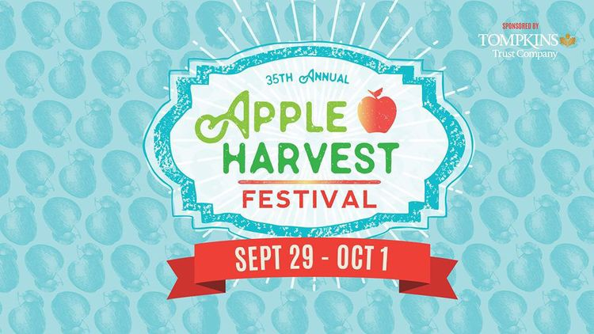
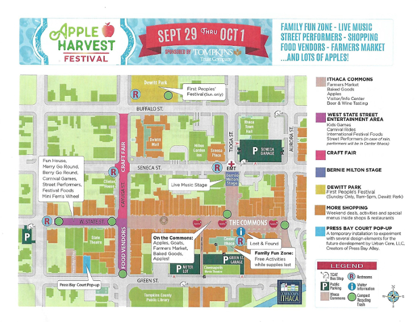

 1
Ithaca Apple Harvest Festival
Attending the Festival
When and Where
- Dowtown Ithaca
- Friday, Sept 29 - 12pm-6pm
- Saturday, Sept 30- 10am-6pm
- Sunday, Oct 1- 10am-6pm
Parking
Parking is available for $5 at the Cayuga, Green, and Seneca Street parking garages.You can see the locations of the parking garages on the map below.
Festival Map
2